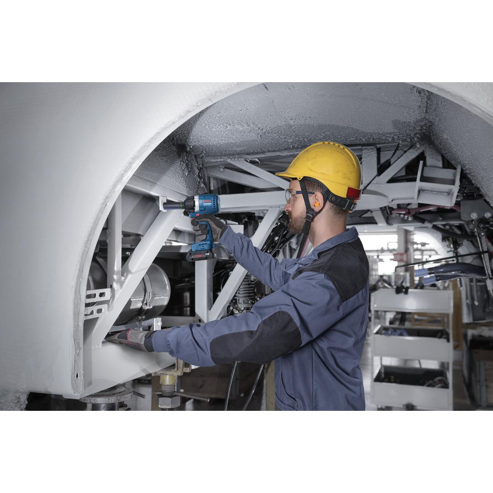
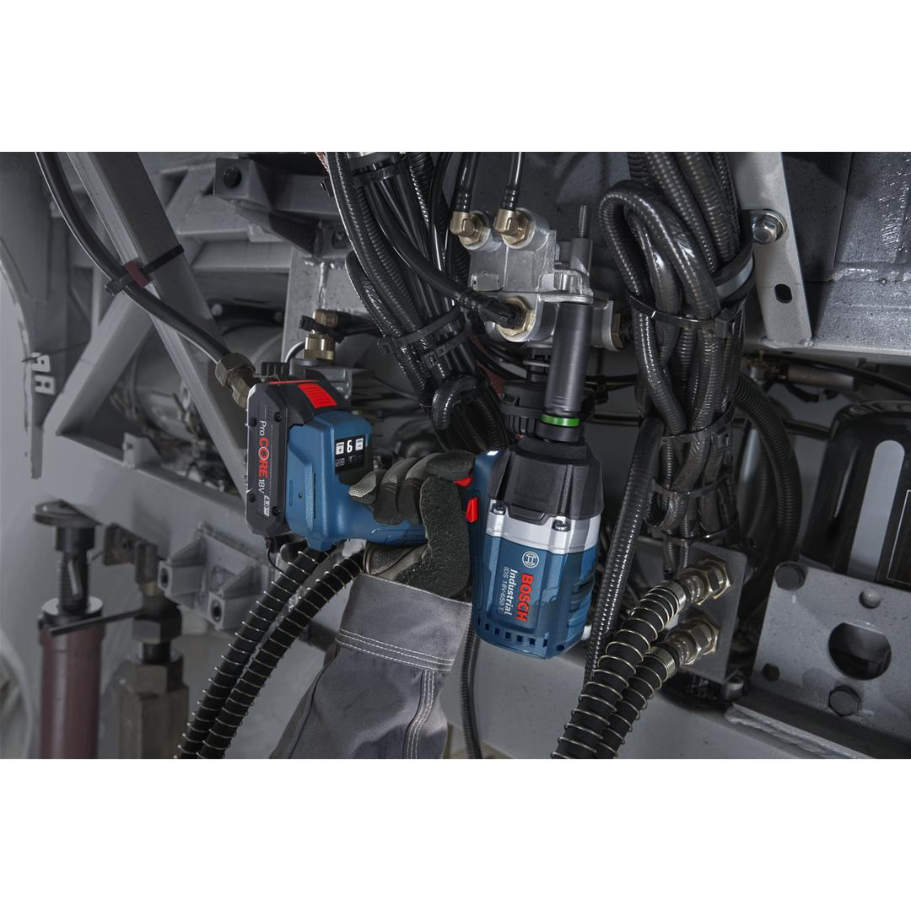
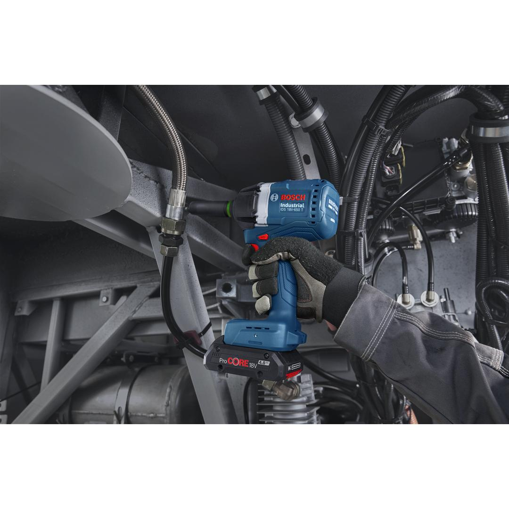
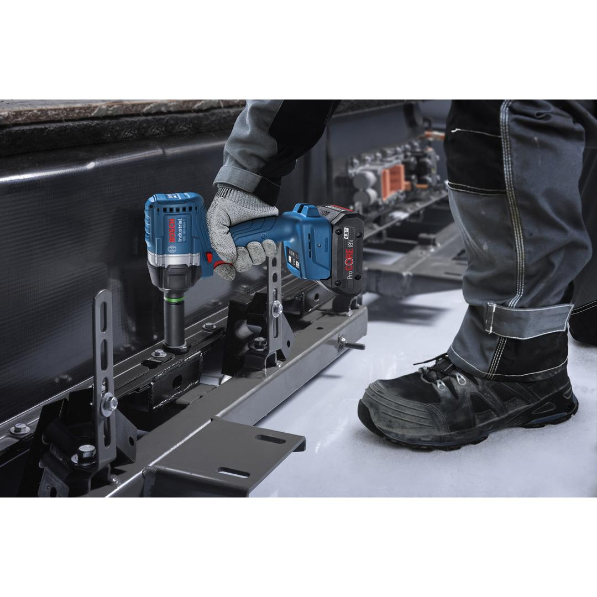
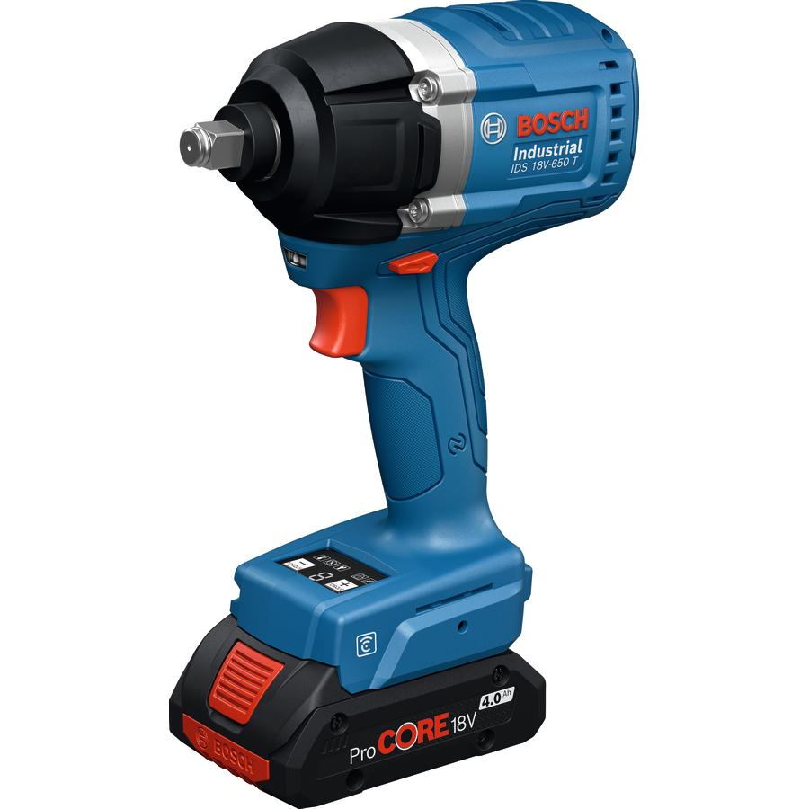
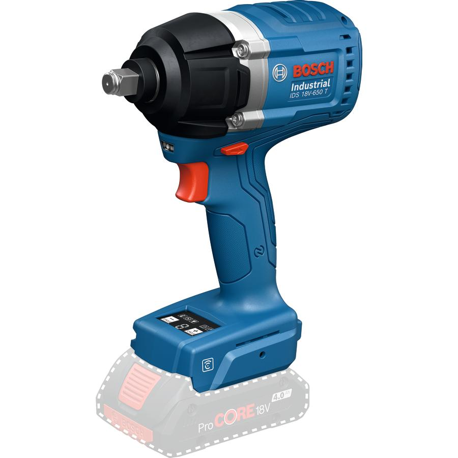

06019P7000






| Torque, from (hard) |
100 Nm |
| Torque, to (hard) |
450 Nm |
| Torque (hard) |
100 – 450 Nm |
| Speed, from |
0 rpm |
| Speed, up to |
2,000 rpm |
| Speed |
0 – 2,000 rpm |
| Direction of rotation |
R/L |
| Weight |
1.800 kg |
| Bit holder |
1/2'' Square |
| Battery |
GBA 18V |
| Drive type |
Battery |
| Design |
Pistol |
| Adjustable speed | ✓ |
| Brushless motor | ✓ |
| Connector type |
Impact mechanism |
| Push start | ✓ |
Industrial impact wrench with consistent, pre-selectable output torque